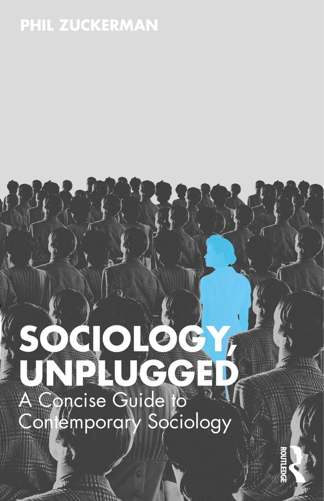
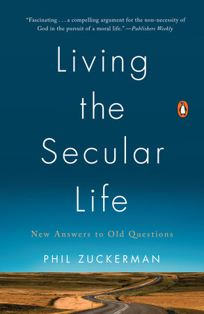
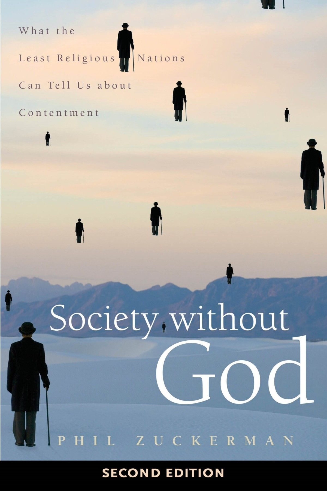
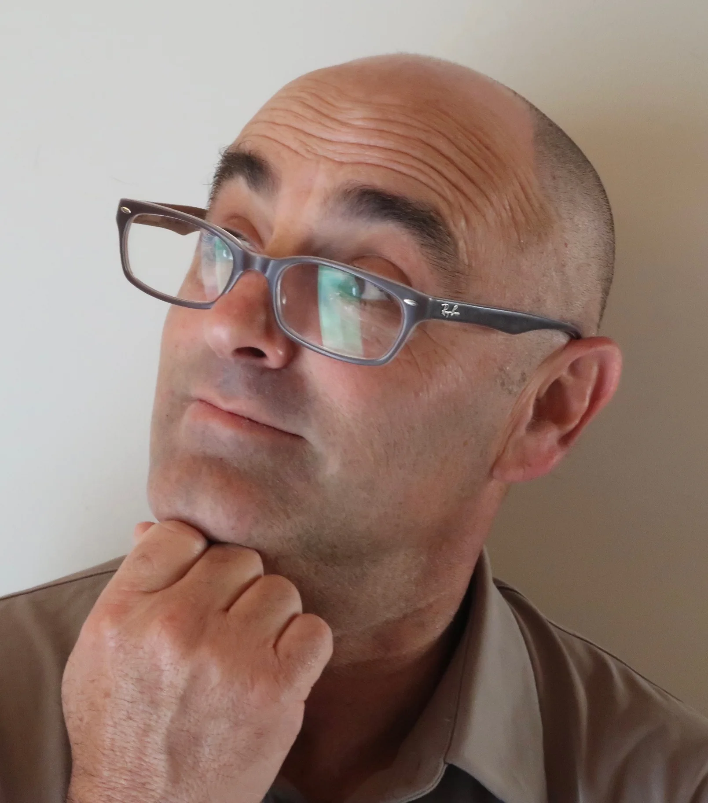
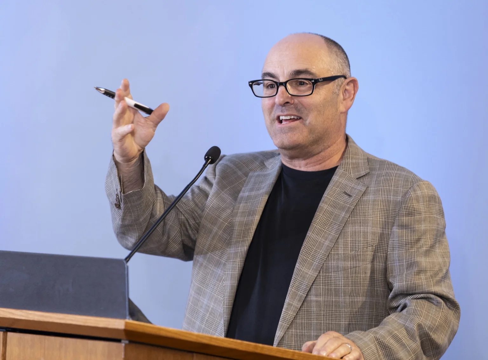
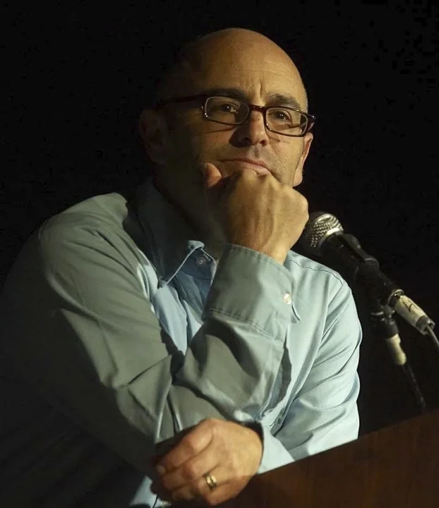

Sociologist, author, & professor
Examining secular life, morality, humanism, and social change.
PlayWatch Phil’s work


Books
Books
Fourteen volumes on secular life, morality, religion, and society.
Enter gallery →
Writing
Writing
Essays and commentary on democracy, culture, and social change.
Read essays →
Media
Media
Interviews, debates, lectures, and recorded conversations.
Watch work →
Speaking
Talks
Lectures, debates, conferences, and institutional appearances.
View events →
About
Biography
Scholarship, teaching, Secular Studies, and life beyond the classroom.
Meet Phil →